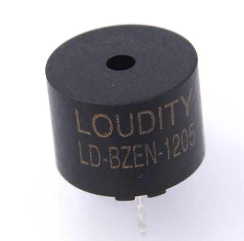

9. Timbre¶
{kind=link}

Els pendents¶
- Emet un to d’una certa freqüència amb el timbre
- Controleu el temps d’emissió del so
- Emetre notes musicals amb el timbre
Buzzer o emissor de so¶
El timbre) és un petit altaveu en forma de negre i negre, situat entre el teclat i la pantalla. La seva funció és fer signes acústics per cridar l’atenció, per això té un so especialment agut i penetrant. La qualitat del so emesa és pobra. El timbre no té control sobre la intensitat del so ni la seva campana (so). D'altra banda, el timbre té la capacitat de reproduir diferents notes musicals que controlen la freqüència (to) i la durada (figura) del so emès. Això permet reproduir puntuacions d’una manera senzilla.
Les unitats utilitzades per mesurar la freqüència seran els ** Hercios **, o el seu símbol ** Hz **.
Un Hercio equival a una oscil·lació per segon. Una altra unitat comuna és el Kilohercio o el KHZ que equival a 1000 Hz o a mil oscil·lacions per segon.
Les unitats utilitzades per mesurar el temps seran els ** mil·lisegons ** o el seu símbol ** MS **
Mil mil·lisegons equival a un segon.
L’oïda humana és més sensible al rang de freqüències que va de 500 Hz (greus) a 2000 Hz (aguts). Aquest rang cobreix el cinquè i el 6è octaves (segon i tercer octaves musicals)
La funció: CPP: Fun: Buzzfreq¶
-
buzzFreq(int Frequency)¶ Aquesta funció emet un so pel timbre amb una certa freqüència.
`` Freqüència '': aquest paràmetre estableix la freqüència del so que emetrà el timbre. Una freqüència zero desactiva l'oscil·lador intern i manté el timbre en silenci. El rang de freqüència vàlid oscil·la entre 15 eines i 32767 Hercios.
L’oïda humana pot percebre sons d’una freqüència de fins a 20.000 habitatges en el millor cas. Per sobre de 20.000 Hz, comencen els ultrasons, que els humans no poden percebre. A mesura que la persona es fa més gran, la seva sensibilitat a les freqüències elevades disminueix, de manera que, a la pràctica, la majoria de les persones no poden distingir els sons amb freqüències superiors a 16000 Hz.
En l'exemple següent, prement el botó 1, el timbre emetrà un so de 2000 Hz durant un temps de 62 mil·lisegons i es mantindrà desactivat durant un temps de 62 mil·lisegons. El so es repetirà mentre es prem el botó 1.
1 2 3 4 5 6 7 8 9 10 11 12 13 14 15 16 17 18 | // Emite un tono de 2000 hercios al presionar el pulsador 1
#include <Wire.h>
#include <PC42.h>
void setup() {
pc.begin(); // Inicializar el módulo PC42
}
void loop() {
// Si se presiona el pulsador 1
if (pc.keyPressed(1)) {
pc.buzzFreq(2000); // Emite un sonido de 2000 Hz
delay(62); // durante 62 milisegundos
pc.buzzFreq(0); // Apaga el generador de sonido
delay(62); // durante 62 milisegundos
}
}
|
La funció: CPP: Fun: `Buzztone '¶
-
buzzTone(int Tone)¶ Aquesta funció és similar a la funció: CPP: Fun: BuzzFreq, produeix un so d'una freqüència determinada pel paràmetre 'Tone' '
`` Tone '': Nota musical que sonarà al timbre. La nota es pot expressar amb un número de 0 a 127 o amb una constant. La nota 0 (`` Silence ') és especial i serveix per silenciar el generador de so.
La taula següent representa les constants, el valor equivalent i les notes que representen per al primer vuitè musical (quart vuitè de la notació científica).
Constant Valor Frecuència Nota científica Nota Do4 49 261 Hz C : sub: 4 Fer Do_4 50 277 Hz C#: sub: 4 Fer sostingut (fer#) RE4 51 294 Hz D : sub: 4 Re Re_4 52 311 Hz D#: sub: 4 Re sostingut (re#) Mi4 53 330 Hz E : sub: 4 Meus Fa4 54 349 Hz F : sub: 4 Fa Fa_4 55 370 Hz F#: sub: 4 FA SURSUDED (FA#) Sol4 56 392 Hz G : sub: 4 Sol Sol_4 57 415 Hz G#: sub: 4 Sol sostingut (Sol#) La4 58 440 Hz A : sub: 4 El LA_4 59 466 Hz A#: sub: 4 El sostingut (el#) Si4 60 494 Hz B : sub: 4 Sí La resta d’octaves tenen la mateixa denominació per a les notes, canviant només el número final per designar el vuitè. Per canviar un vuitè, es pot afegir o restar el número 12:
`` Do4`` + 12 = `` `` `` ``` Do4`` - 12 = `` `` `` `La taula següent mostra el valor i la freqüència de la nota de cadascun dels octaves:
Constant Valor Frecuència Nota científica Nota Silenci 0 0 Hz Sense so (silenci) Do0 1 16,35 Hz C : sub: 0 Fer subcontraoctava Do1 13 32,70 Hz C : sub: 1 Fer contraoctava Do2 25 65,41 Hz C : sub: 2 Fes Gran Vuitè Do3 37 130,8 Hz C : sub: 3 Feu vuitè petit Do4 49 261,6 Hz C : sub: 4 Feu el vuitè cosí Do5 61 523,2 Hz C : sub: 5 Feu vuitè segon Do6 73 1046 Hz C6 Fer el vuitè terç Do7 85 2093 Hz C : sub: 7 Feu vuitè quart Do8 97 4186 Hz C : sub: 8 Feu vuitè cinquè Do9 109 8372 Hz C : sub: 9 Feu vuitè sisè Do10 121 16744 Hz C : sub: 10 Feu vuitè setè FA10 127 23679 Hz F : sub: 10 FA Vuitè setè
En l'exemple següent, prement el botó 1, sonarà una nota més greu i quan prémer el botó 2, sonarà una nota més aguda. La nota inicial serà la `` `` del primer vuitè (`` la4 '), que és el to que s'utilitza normalment per perfeccionar els instruments.
1 2 3 4 5 6 7 8 9 10 11 12 13 14 15 16 17 18 19 20 21 22 23 24 25 26 27 28 29 30 31 32 33 34 35 36 37 38 39 40 | // Emite una nota más grave al presionar el pulsador 1
// Emite una nota más aguda al presionar el pulsador 2
#include <Wire.h>
#include <PC42.h>
int nota;
void setup() {
pc.begin(); // Inicializar el módulo PC42
nota = La4;
}
void loop() {
// Muestra la nota actual en el display
pc.dispNum(nota);
// Si se presiona el pulsador 1
if (pc.keyPressed(1)) {
// Calcular una nota más grave
nota = nota - 1;
if (nota < 1)
nota = 1;
pc.buzzTone(nota); // Emite una nota musical
delay(100); // durante 0.1 segundos
pc.buzzTone(0); // Apaga el generador de sonido
delay(500); // durante 0.5 segundos
}
// Si se presiona el pulsador 2
if (pc.keyPressed(2)) {
nota = nota + 1; // Calcular una nota más aguda
if (nota > 127)
nota = 127;
pc.buzzTone(nota); // Emite una nota musical
delay(100); // durante 0.1 segundos
pc.buzzTone(0); // Apaga el generador de sonido
delay(500); // durante 0.5 segundos
}
}
|
El següent programa d’exemple toca la cançó de Happy Birthday cada vegada que es prem el botó. També podeu canviar la vuitena de la cançó per una de més aguda o més greu, canviant el valor de la variable "octava" a la línia 18.
1 2 3 4 5 6 7 8 9 10 11 12 13 14 15 16 17 18 19 20 21 22 23 24 25 26 27 28 29 30 31 32 33 34 35 36 37 38 39 40 41 42 43 44 45 46 47 48 49 50 51 52 53 54 55 56 57 58 59 60 61 | // Al presionar el pulsador 1, suena la canción de 'cumpleaños feliz'
#include <Wire.h>
#include <PC42.h>
void setup() {
pc.begin(); // Inicializar el módulo PC42
}
void loop() {
int tempo;
int octave;
// Establece el tempo, en milisegundos, para la nota más corta
tempo = 120;
// Establece la octava. Hay 12 tonos y semitonos por cada octava
octave = 4 * 12;
// Apagar los sonidos
pc.buzzTone(0);
// Esperar mientras no se presione el pulsador 1
while(pc.keyPressed(1) == 0);
// Canción de cumpleaños feliz
// Primera columna = notas musicales (tono)
// Segunda columna = duración de cada nota (figura musical)
pc.buzzTone(octave + Do0); delay(3 * tempo);
pc.buzzTone(0); delay(10);
pc.buzzTone(octave + Do0); delay(1 * tempo);
pc.buzzTone(octave + Re0); delay(4 * tempo);
pc.buzzTone(octave + Do0); delay(4 * tempo);
pc.buzzTone(octave + Fa0); delay(4 * tempo);
pc.buzzTone(octave + Mi0); delay(8 * tempo);
pc.buzzTone(octave + Do0); delay(3 * tempo);
pc.buzzTone(0); delay(10);
pc.buzzTone(octave + Do0); delay(1 * tempo);
pc.buzzTone(octave + Re0); delay(4 * tempo);
pc.buzzTone(octave + Do0); delay(4 * tempo);
pc.buzzTone(octave + Sol0); delay(4 * tempo);
pc.buzzTone(octave + Fa0); delay(8 * tempo);
pc.buzzTone(octave + Do0); delay(3 * tempo);
pc.buzzTone(0); delay(10);
pc.buzzTone(octave + Do0); delay(1 * tempo);
pc.buzzTone(octave + Do1); delay(4 * tempo);
pc.buzzTone(octave + La0); delay(4 * tempo);
pc.buzzTone(octave + Fa0); delay(4 * tempo);
pc.buzzTone(octave + Mi0); delay(4 * tempo);
pc.buzzTone(octave + Re0); delay(8 * tempo);
pc.buzzTone(octave + La_0); delay(3 * tempo);
pc.buzzTone(0); delay(10);
pc.buzzTone(octave + La_0); delay(1 * tempo);
pc.buzzTone(octave + La0); delay(4 * tempo);
pc.buzzTone(octave + Fa0); delay(4 * tempo);
pc.buzzTone(octave + Sol0); delay(4 * tempo);
pc.buzzTone(octave + Fa0); delay(8 * tempo);
}
|
La funció: CPP: Fun: `Buzzplay '¶
-
buzzPlay(int Tone, int milliseconds)¶ Aquesta funció permet sonar una o més notes musicals al timbre durant un temps determinat. Els paràmetres de funció són els següents:
`` Tone '': Nota musical que sonarà al timbre. Per a més detalls, vegeu: Ref: Buzztone
`` Millisegonds '': temps en mil·lisegons que sonarà la nota musical. Ha d’estar en un rang d’1 a 2000.
La funció s’executa immediatament i el programa Arduino continua amb la instrucció següent mentre sona el timbre. Això us permet enviar a l’instant a | Buzzmem | Notes, que memoritzen i juguen un per un. Aquesta funció permet sonar una partitura mentre el programa Arduino continua funcionant.
-
int
buzzPlay()¶ La funció: CPP: Fun: `Buzzplay 'sense arguments, retorna el nombre de notes que encara no han acabat de sonar la puntuació enviada al timbre. La memòria de puntuació pot emmagatzemar fins a | Buzzmem | qualificacions. Si s’envien més notes, l’últim enviat no s’emmagatzemarà. Si cal enviar més de | Buzzmem | Notes, abans d’haver d’esperar fins que hi hagi una habitació gratuïta a la memòria de la puntuació.
Aquesta funció retorna zero si totes les notes han acabat de sonar.
Exemple del programa en què sona una alarma amb la funció: CPP: Fun: `Buzzplay 'per enviar les notes.
1 2 3 4 5 6 7 8 9 10 11 12 13 14 15 16 17 18 19 20 21 22 23 24 25 26 | // Al presionar el pulsador 1, suena una alarma de despertador
#include <Wire.h>
#include <PC42.h>
void setup() {
pc.begin(); // Inicializar el módulo PC42
}
void loop() {
// Esperar mientras no se presione el pulsador 1
while(pc.keyPressed(1) == 0);
// Enviar las notas de una alarma de despertador
pc.buzzPlay(Do7, 62);
pc.buzzPlay(Silence, 62);
pc.buzzPlay(Do7, 62);
pc.buzzPlay(Silence, 62);
pc.buzzPlay(Do7, 62);
pc.buzzPlay(Silence, 62);
pc.buzzPlay(Do7, 62);
pc.buzzPlay(Silence, 566);
// Esperar a que suenen todas las notas
while (pc.buzzPlay());
}
|
Exemple del programa en què sona una música de rellotge mitjançant la funció: CPP: Fun: `Buzzplay '. Aquest exemple es mostra a la pantalla el nombre de notes que encara no han acabat de sonar.
1 2 3 4 5 6 7 8 9 10 11 12 13 14 15 16 17 18 19 20 21 22 23 24 25 26 27 28 29 30 31 32 33 34 35 | // Al presionar el pulsador 1, suena un carrillón y el
// display muestra el número de notas que aún no han
// terminado de sonar.
#include <Wire.h>
#include <PC42.h>
void setup() {
pc.begin(); // Inicializar el módulo PC42
}
void loop() {
// Esperar mientras no se presione el pulsador 1
while(pc.keyPressed(1) == 0);
// Enviar la partitura de carrillón
pc.buzzPlay(La4, 500);
pc.buzzPlay(Fa4, 500);
pc.buzzPlay(Sol4, 500);
pc.buzzPlay(Do4, 1000);
pc.buzzPlay(Silence, 10);
pc.buzzPlay(Do4, 500);
pc.buzzPlay(Sol4, 500);
pc.buzzPlay(La4, 500);
pc.buzzPlay(Fa4, 1000);
// Esperar hasta que suene toda la partitura
// Mostrar el número de notas restantes
int notas;
do {
notas = pc.buzzPlay();
pc.dispNum(notas);
} while (notas > 0);
}
|
Les funcions: C ++: Func: Buzz Off Y: CPP: Func:` Buzzon '¶
-
buzzOff()¶ Desconnecteu el generador de so del timbre. Com a resultat, el brunzit deixa de emetre so. Si el generador de so funciona en aquell moment, ho continuarà fent, de manera que si el timbre es connecta de nou amb la funció: cpp: fun: buzzon, això tornarà a emetre so.
-
buzzOn()¶ Connecteu el generador de so amb el timbre. Si en aquell moment el generador de so està generant un to, el timbre començarà a emetre so.
Exemple de funcionament de Buzzon i Buzzoff. Al programa següent es genera una melodia que sona contínuament. Si premeu el botó 1, el so està desconnectat. Si premeu el botó 2, el so es connectarà de nou.
1 2 3 4 5 6 7 8 9 10 11 12 13 14 15 16 17 18 19 20 21 22 23 24 25 26 27 28 29 30 31 32 33 | // Genera una melodía que suena de forma contínua
// Presionando el pulsador 1, el sonido se desconecta.
// Presionando el pulsador 2, el sonido volverá a conectarse.
#include <Wire.h>
#include <PC42.h>
void setup() {
pc.begin(); // Inicializar el módulo PC42
}
void loop() {
// Tocar una melodía
pc.buzzPlay(Sol5, 500);
pc.buzzPlay(La5, 500);
pc.buzzPlay(Fa5, 500);
pc.buzzPlay(Fa4, 500);
pc.buzzPlay(Do5, 1000);
pc.buzzPlay(0, 500);
delay(500);
// Espera hasta que termine de sonar la melodía.
// Durante ese tiempo desconecta o conecta el sonido
// si se presionan los pulsadores 1 y 2
while(1) {
if (pc.keyPressed(1)) // Si se presiona el pulsador 1
pc.buzzOff(); // desconecta el sonido.
if (pc.keyPressed(2)) // Si se presiona el pulsador 2
pc.buzzOn(); // conecta el sonido.
if (pc.buzzPlay() == 0) // Si la nota ha terminado
return; // termina la espera.
}
}
|
La funció: CPP: Fun: `Buzzbegin '¶
-
buzzBegin()¶ Aquesta funció inicialitza el sistema de generació de so. Connecteu el generador de so al timbre i buideu la memòria de les notes musicals enviades per la funció: CPP: Funció: `Buzzplay '. Quan s’executa aquesta funció, el timbre deixa d’emetre el so i està disposat a emetre un nou to quan rep la comanda.
No és necessari executar aquesta funció al començament de cada programa perquè la funció més general `comence '' ja inicialitza tots els sistemes, inclòs el timbre.
Intensitat sonora¶
La intensitat del so emès pel timbre no és la mateixa per a totes les freqüències. A baixes freqüències, la intensitat del so emès és menor. A mesura que augmenta la freqüència, la intensitat del so augmenta.
Al voltant del ** 2000 Hz ** El timbre ressona i produeix un so d’una intensitat molt més gran que en altres freqüències. El so típic dels alarmes té aquest to. La freqüència de 2000 Hz es troba entre una nota `` si`` del vuitè terç (`` Si6`` = 1975,53 Hz) i una `` `` `` Octave quart nota ( do7 = 2093,00 Hz). Es tracta d’un to força agut que l’oïda humana percep molt bé perquè està situada a l’àrea de major sensibilitat auditiva, de 500 Hz a 2000 Hz.
Al voltant de 4.000 Hz El timbre també ressona produint un so més intensitat, però a aquesta freqüència l’oïda humana té menys sensibilitat que a la freqüència de 2000 Hz i el so no es perceba amb tanta intensitat.
Precisió i precisió de la freqüència¶
La ** precisió ** de la freqüència té un error de +-1%. Això significa que la freqüència realment obtinguda sempre es desvia cap al baix o a la aguda en una certa quantitat. La majoria de freqüències tenen una desviació inferior al 0,4%, mentre que només algunes freqüències específiques pateixen una desviació fins a un 1%. La desviació de freqüència sempre és la mateixa per al mateix to. Aquest error es pot percebre com una petita prova de freqüència. Una oïda ben formada percep les diferències de freqüència fins al 0,2%.
L’error de ** precisió ** de la freqüència depèn de la calibració que s’ha realitzat. Aquest error produeix una variació de freqüència igual a totes les freqüències emeses. L’error de precisió depèn de la temperatura i del temps de funcionament del panell i està al voltant d’un +-2%. Aquest error no es notarà quan emeten diversos sons, perquè afecta totes les freqüències i l’orella només detecta notes definides en el cas que una freqüència es desviï respecte a una altra. Tanmateix, si dos panells intenten emetre un so d’igual freqüència, es pot distingir una diferència de freqüència entre ells a causa d’un error de precisió.
Exercicis¶
Canvieu el programa següent per sonar el pit d'un despertador. La seqüència de sons serà de quatre pitjos de 2000 Hercios amb una durada cadascun de 64 mil·lisegons i un espai sense so de 64 mil·lisegons després de cada pit. Al final de la seqüència, s'hauria d'esperar un temps de 500 mil·lisegons sense so.
1 2 3 4 5 6 7 8 9 10 11 12 13 14 15 16 17 18 19 20 21 22 23 24 25 26 27 28 29 30 31 32 33 34 35 36 37 38 39 40 41 42 43 44 45 46 47 48 49 50 51 52 53 54 55 56 57 58 59 60 61 62 63
// Al presionar el pulsador 1, suena una canción. // Versión con tabla de datos (array) #include <Wire.h> #include <PC42.h> // Canción // Primera columna: nota musical, silencio (0) o // pausa entre notas iguales (-1) // Segunda columna: Duración de la nota (en tempos) char song[] = { La4, 4, Fa4, 4, Sol4, 4, Do4, 8, -1, Do4, 4, Sol4, 4, La4, 4, Fa4, 8, }; void setup() { pc.begin(); // Inicializar el módulo PC42 } void loop() { int tempo, octave; char i, note, figure; // Establece el tempo, en milisegundos, para la nota más corta tempo = 125; // Establece el desplazamiento de octava. // +12 = aumenta una octava. -12 = disminuye una octava. octave = 0; // Apagar los sonidos pc.buzzTone(0); // Esperar mientras no se presione el pulsador 1 while(pc.keyPressed(1) == 0); // Tocar la canción almacenada i = 0; while(i < sizeof(song)) { note = song[i]; i = i + 1; if (note == -1) { // suena una pausa entre notas iguales pc.buzzTone(0); delay(10); } else { // suena una nota musical figure = song[i]; i = i + 1; pc.buzzTone(note + octave); delay(figure * tempo); } } }
El següent programa executa la partitura emmagatzemada a la matriu `` cançó '', la música d'un Carrillón. Canvieu la partitura per una altra cançó.
1 2 3 4 5 6 7 8 9 10 11 12 13 14 15 16 17 18 19 20 21 22 23 24 25 26 27 28 29 30 31 32 33 34 35 36 37 38 39 40 41 42 43 44 45 46 47 48 49 50 51 52 53 54 55 56 57 58 59 60 61 62 63
// Al presionar el pulsador 1, suena una canción. // Versión con tabla de datos (array) #include <Wire.h> #include <PC42.h> // Canción // Primera columna: nota musical, silencio (0) o // pausa entre notas iguales (-1) // Segunda columna: Duración de la nota (en tempos) char song[] = { La4, 4, Fa4, 4, Sol4, 4, Do4, 8, -1, Do4, 4, Sol4, 4, La4, 4, Fa4, 8, }; void setup() { pc.begin(); // Inicializar el módulo PC42 } void loop() { int tempo, octave; char i, note, figure; // Establece el tempo, en milisegundos, para la nota más corta tempo = 125; // Establece el desplazamiento de octava. // +12 = aumenta una octava. -12 = disminuye una octava. octave = 0; // Apagar los sonidos pc.buzzTone(0); // Esperar mientras no se presione el pulsador 1 while(pc.keyPressed(1) == 0); // Tocar la canción almacenada i = 0; while(i < sizeof(song)) { note = song[i]; i = i + 1; if (note == -1) { // suena una pausa entre notas iguales pc.buzzTone(0); delay(10); } else { // suena una nota musical figure = song[i]; i = i + 1; pc.buzzTone(note + octave); delay(figure * tempo); } } }
Notes de 'La Cucaracha':
`` Do4 do4 do4 fa4 la4 ''`` Do4 do4 do4 fa4 la4 ''`` FA4 FA4 MI4 MI4 RE4 RE4 DO4```` Do4 do4 mi4 sol4````` Do4 do4 mi4 sol4````` Do5 re5 do5 si4 la4 sol4 fa4 '' 'Notes "Feliç aniversari":
`` Do4 do4 re4 do4 fa4 mi4 '' '`` Do4 do4 re4 do4 sol4 fa4 '' '`` Do4 do4 do5 la4 fa4 mi4 re4````` Do5 do5 la4 fa4 sol4 fa4 '' 'A cadascuna de les notes anteriors, heu d’afegir el temps de cada nota (figura) per completar la puntuació. Aquesta vegada serà de 200, 400 o 800 mil·lisegons.